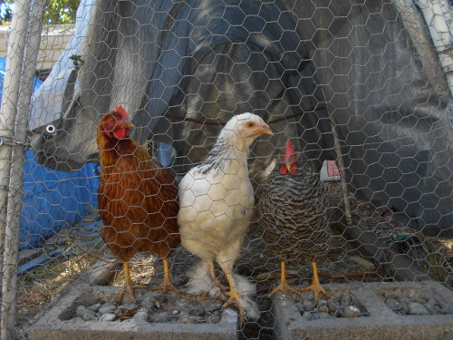

Introduction
The chicken (Gallus gallus domesticus) is a type of domesticated fowl, a subspecies of the red junglefowl. It is one of the most common and widespread domestic animals, with a population of more than 19 billion as of 2011. Humans keep chickens primarily as a source of food, consuming both their meat and their eggs.
Genetic studies have pointed to multiple maternal origins in Southeast Asia, East Asia, and South Asia, but with the clade found in the Americas, Europe, the Middle East and Africa originating in the Indian subcontinent. From India, the domesticated chicken was imported to Lydia in western Asia Minor, and to Greece by the fifth century BC. Fowl had been known in Egypt since the mid-15th century BC, with the "bird that gives birth every day" having come to Egypt from the land between Syria and Shinar, Babylonia, according to the annals of Thutmose III.
More than 50 billion chickens are reared annually as a source of food, for both their meat and their eggs.
The vast majority of poultry are raised in factory farms. According to the Worldwatch Institute, 74 percent of the world's poultry meat and 68 percent of eggs are produced this way. One alternative to intensive poultry farming is free range farming.
Friction between these two main methods has led to long-term issues of ethical consumerism. Opponents of intensive farming argue that it harms the environment, creates human health risks and is inhumane. Advocates of intensive farming say that their highly efficient systems save land and food resources owing to increased productivity, and that the animals are looked after in state-of-the-art environmentally controlled facilities.
In part due to the conditions on intensive poultry farms and recent recalls of large quantities of eggs, there is a growing movement for small-scale micro-flocks or 'backyard chickens'. This involves keeping small numbers of hens (usually no more than a dozen) in suburban or urban residential areas to control bugs, to utilize chicken waste as fertilizer in small gardens, and of course for the high-quality eggs and meat that are produced.